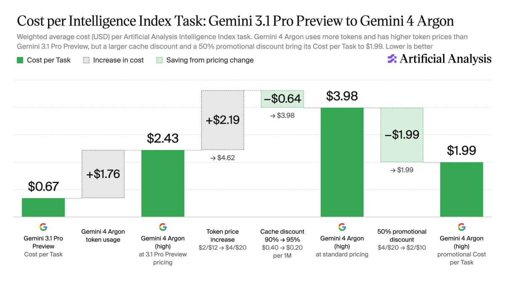
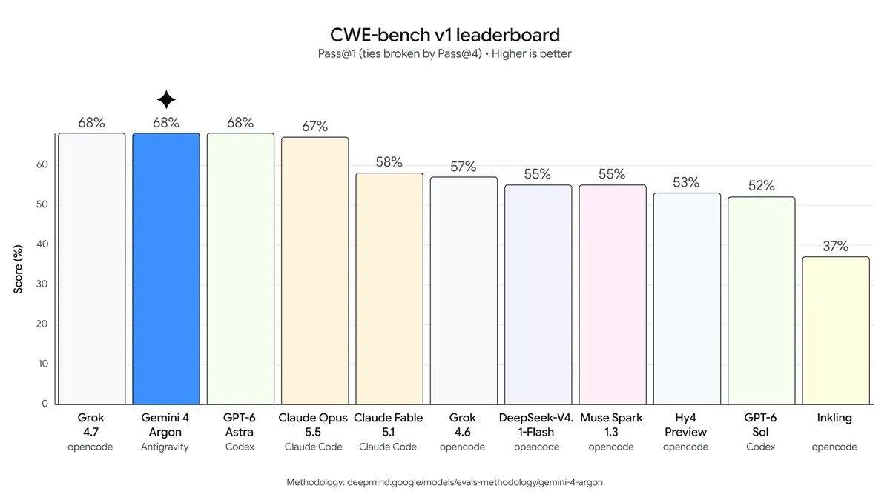

一、导语：Google 把丢了一年多的位置拿了回来
9 月 30 日，Google DeepMind 放出 Gemini 4 Argon。这是 Google 七个多月来第一款定位高于 Flash 的自有旗舰，也是它第一次在 Artificial Analysis 的智能指数上重新挤回前列——53 分，追平 OpenAI 的 GPT-6 Astra，比前一天刚上线的 GPT-6.1 Sol 还高 1 分。巧的是，这一天 OpenAI 也刚把 GPT-6.1 Sol 推上线。两家前沿实验室在同一周对撞，节奏密到发布时间表已经按天算。
二、背景分析：从 30 分的低谷往上补
把时间往前拨。Google 上一款非 Flash 的旗舰是 Gemini 3.1 Pro Preview，智能指数只有 30 分，落后同期对手二十多分，是它近两年最难看的一段。此后 Google 把精力压在 Flash 这条轻量线上，3.8 Flash 也只拿到 41 分。Argon 就是从这个低谷里补上来的：一次跳升 23 分，直接把 Google 拉回第一梯队。
另一边的节奏更紧。9 月 29 日，OpenAI 发布 GPT-6.1 Sol，主打“以 Astra 五分之一的价格接近其编码与计算机操作水平”；隔天，Google 用 Argon 回应。两家的产品周期已经短到要按天比较——而这一次，Google 在“智能”这一项上没有掉队。
三、核心内容：一个模型，三张牌
智能：追平 Astra，靠的是少胡说和更能干活
Argon 在高推理档位下拿到 53 分，与 GPT-6 Astra（max）持平，领先 GPT-6.1 Sol（max）1 分。提升主要来自两个方向：幻觉更少，以及智能体（agentic）能力更强——后者一直是 Gemini 的短板。在 Zapier 开发、Artificial Analysis 独立评测的 AutomationBench-AA 上，Argon 以 78% 排第一，比 Claude Sonnet 5.5（max）高 7 分；Terminal-Bench 4.0 拿到 57%，比 Gemini 3.1 Pro Preview 高了整整 53 分，不过仍落后 Claude Sonnet 5.5（64%）和 Opus 5.5（60%）。
最亮眼的数字是幻觉率。在 AA-Omniscience 评测里，Argon 的幻觉只有 15%，是所有智能指数 45 分以上模型里最低的——作为对比，GPT-6 Astra 是 51%，GPT-6.1 Sol 是 54%。换句话说，它更愿意承认“不知道”，而不是硬猜一个答案。对法律、金融这类错一条就要付代价的场景，这比多考几分更值钱。
价格：促销期打到 Astra 的六成，但便宜不能当真
Argon 标准价 $4 / $20（每百万输入/输出 token），促销期直接对折到 $2 / $10，缓存输入再省 95%。折算成每任务成本，促销价下是 $1.99，约为 GPT-6 Astra（max，$3.26）的 60%。
但这份便宜有两个前提。一是它来自更低的单价，不是更省 token——Argon 平均每任务要吐 6.2 万输出 token，是 Astra（2.7 万）的两倍多。二是促销有期限：一旦结束，每任务成本会回到 $3.98，反而比 Astra 贵约 20%。Google 至今没说这个折扣什么时候停。

输出：一口气写 100 万 token
Argon 把单次输出上限从上一代的 6.4 万 token 提到 100 万，并配了一个新的“长解码续写”特性：API 可以把长回答暂停，在后续调用里接着写，让长推理不再撞上请求超时。上下文窗口同样是 100 万。这个改动看起来是参数，实际决定了 agent 能不能真的“跑长任务”。
安全：先给可信防御者，暂不公开发布
Argon 没有直接放开，而是先进入 Fairwind 计划，只发给可信的网络安全防御方，并标注“参与美国政府自愿的发布前模型访问流程”，之后再分批推向开发者、企业和消费者。在 CWE-bench v1 上它拿到 68%，与榜首并列；Wiz 的 “Scan for Good”用它扫出一处此前前沿模型都没发现的漏洞，暴露了全球医院在用医疗软件里的敏感个人信息。

四、各方反应：业内把它算回前三，但也提醒有水分
Koray Kavukcuoglu（Google DeepMind 高级副总裁兼首席 AI 架构师）在博客里的定调很明确：
「Gemini 4 Argon 在真实软件工程、法律金融等企业知识工作、以及网络防御这类复杂工作流中，都能给出前沿级表现。」
Artificial Analysis 的标题更直接——“Google is back”，把它重新算进前三实验室。但他们也点出了水分：Argon 目前还不是公开可用，那个 50% 折扣只是首发促销，结束时间未定；它真正的“便宜”只有在促销期内成立。竞争对手的动作同步进行——同一天 OpenAI 用 GPT-6.1 Sol 继续压价格，Claude Sonnet 5.5 在 Terminal-Bench 上仍压着 Argon。
五、深度解读：前沿竞赛分成两条路，Google 拿的是分发
第一层，两家前沿实验室的路线已经分叉。OpenAI 走“价格 + 平台分发”：把 GPT-6.1 Sol 做到 Astra 五分之一价，再接上 ChatGPT 的超 12 亿周活；Google 走“推理深度 + 可信安全”：用最低幻觉率和网络安全定位，先卖给政府与受监管行业。两条路并不冲突，反而把市场切成了两块。
第二层，100 万输出 token 不是数字游戏。当模型能一口气写完几十万 token 的推理链，agent 的“长任务”才有落地基础——Argon 帮 Google 内部把 80 万行的 Fuchsia Zircon 内核从 C++ 迁到 Rust，把 libgav1 里 3.2 万行 SIMD 代码换成内存安全的 Rust 后还快了 2.7 倍。这些内部战绩，是它敢卖企业场景的底气。
第三层，Google 真正的杠杆还是分发。模型追平只是入场券，把它塞进搜索、Workspace、Cloud 和 Pixel 才是护城河。Argon 现在只给付费 API 客户和 AI Ultra 订阅者，下一步的铺开速度，才决定它能不能把这次“回到前三”变成常态而不是一瞬。
六、总结
一句话：Argon 帮 Google 用一次 23 分的跳升回到了牌桌；但能不能留在前三，要看 50% 折扣结束之后，它在分发和价格上还能不能扛住 OpenAI 的节奏。